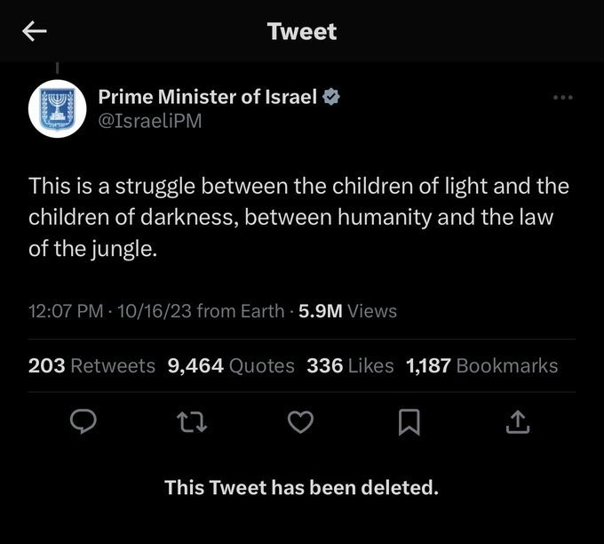

Posted on October 17, 2023
If your answer is that this "conflict" is "complex", maybe you don't know what's going on.
And I'm not here to tell you what's going on- that isn't my job, and it's entirely up to you if you want to be more aware of what's going on and RESEARCH.
U.S. media is failing you. I just checked my email on October 18 and recieved an email from NYT on the Hamas attack on Israel.. Something that was a week ago- meanwhile after that attack Israel has been wiping Palestinians off the map with the rate that they're bombing people.
When talking about the attack on Israel- I hear so many people describing it using words like "innocent", "children", "brutal", "deadly", "horrific", etc. When talking about the attacks on Gaza it's a "conflict", "defense tactic", or "disagreement".
Like what is this hypocrisy?
It's all a foreign relations thing. America didn't support Ukraine because America cared about Ukrainians. America supported them because their relations with Russia are - ironically "complex".
Either way, the growth of islamaphobia is insane. How is the Israeli prime minister allowed to refer to Palestinians as being from darkness? or from a jungle?
 Read More